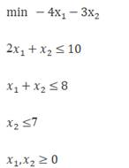
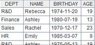
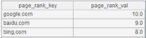
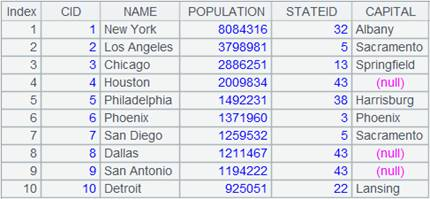

Description:
Return members of a sequence which satisfy a condition.
Syntax:
|
A.select(x) |
|
|
A.select(x1:y1, x2:y2, ......xi:yi) |
The simplified syntax of multiple-condition query using "&&", which is equal to A.select(x1== y1 && x2== y2 &&...... xi==yi) |
Note:
The function computes expression x against each member of the sequence A, and returns a new sequence composed of those members which make x return true.When there are no parameters, return all the members. If the name of a to-be-referenced column of the sequence is the same as a cell name, the sequence name should be attached before the column name in the expression.
Parameters:
|
A |
A sequence. |
|
x |
A boolean expression, which may be null. when using @b option, x should be an expression whose return value is a number. |
|
xi:yi |
xi is an expression, and yi is a comparing value. |
Options:
|
@1 |
Return the first member that fulfills the condition. |
|
@z |
Search the members from back to front |
|
@b |
Use binary search when A is an ordered sequence. If A is not an ordered one, then this option should not be used, or it may bring about the incorrect result. When the option works with A.select(x1:y1, x2:y2, ......xi:yi) to find out members that make x in cmp(x,y) return the value 0, you can just write A.select@b(x1:y1, x2:y2, ......xi:yi) without cmp(). |
|
@m |
Use parallel algorithm to handle data-intensive or computation-intensive tasks; no definite order for the records in the result set; it can¡¯t be used with @1bz options. |
|
@t |
Return an empty table sequence with data structure if the grouping and aggregate operation over the sequence returns null |
|
@c |
Enable getting the first ineligible member from left to right beginning from the first member |
|
@r |
Enable searching for the first eligible members from left to right and getting all members after it (inclusive) |
Return value:
A new sequence composed of members which make the expression x return true
Example:
|
|
A |
|
|
1 |
[2,5,4,3,2,1,4,1,3] |
|
|
2 |
=A1.select(~>3) |
[5,4,4] |
|
3 |
=A1.select@1(~>3) |
[5] |
|
4 |
=A1.select@z(~>3) |
[4,4,5] |
|
5 |
=[1,2,3,4,5,6].select@b(~-4) |
[4] |
|
6 |
=demo.query("select * from EMPLOYEE order by EID") |
|
|
7 |
=A6.select(EID==9) |
|
|
8 |
=A6.select@b(EID-9) |
The expression x needs to be converted to a number with @b. |
|
9 |
=A6.select(EID:9) |
|
|
10 |
=A6.select@b(EID:9) |
It¡¯s no need to execute the conversion by using the colon when @b exists. |
|
11 |
=A6.select(GENDER:"F",SALARY:7000) |
|
|
12 |
=A6.select() |
Return all members as there are no parameters. |
|
13 |
=A6.select@m(EID==9) |
Use @m option to increase performance of big data handling. |
|
14 |
=A6.select@t(EID==501) |
Return an empty table sequence with the data structure  |
|
15 |
=to(3).new(~:ID,~*~:A1) |
 |
|
16 |
=A15.select(A15.A1==4) |
When a column name is namesake with a cell name, the column name referenced in an expression should be preceded by the corresponding sequence name |
|
17 |
[1,3,5,7,9,11,13] |
|
|
18 |
=A17.select@c(~<10) |
[1,3,5,7,9]; get the first ineligible member from left to right |
|
19 |
=A17.select@zc(~>10) |
[13,11]; get the first ineligible member backwards |
|
20 |
=A17.select@r(~>10) |
[11,13] |
.Related functions:
Description:
Return members of a table sequence which satisfy a condition.
Syntax:
|
T.select(x) |
Note:
The function computes expression x against each member of table sequence T, and returns a new table sequence composed of those members which make x return true
Options:
|
@i |
Reuse T¡¯s index, which may disrupt the order of the result set |
Parameters:
|
T |
A table sequence |
|
x |
Filtering expression; can be null |
Return value:
A table sequence
Example:
|
|
A |
|
|
1 |
=demo.query("select * from DEPT").keys@i(DEPTID) |
 Create an index |
|
2 |
=A1.select@i(FATHER:12) |
 Reuse A1¡¯s index |